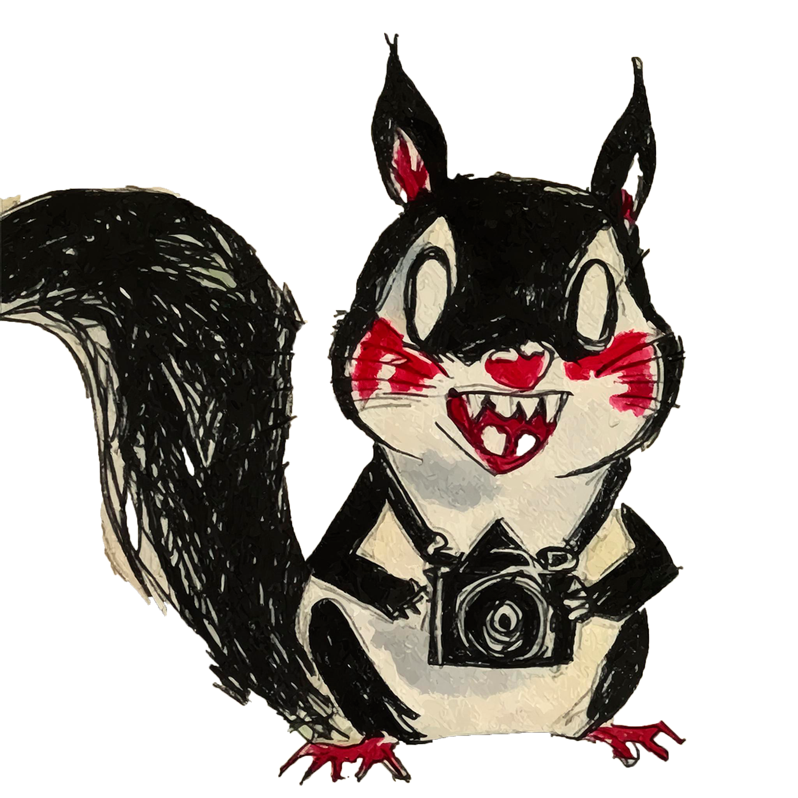

FANZINE / 001
BLOG PERSONAL
HOLA, SOY
JASHIA .
Este es mi website.
CONÓCEME ↓01 / SOBRE MÍ
UN POCO
SOBRE MÍ.

MiniJashi — 001
Soy una realizadora audiovisual que disfruta explorar el arte, crear imágenes y descubrir nuevas formas de contar cosas.
Esta pequeña ardillita es mi logo y una forma de representarme. MiniJashi también es este espacio personal, un website donde quiero compartir lo que hago, lo que me gusta, mis proyectos y las ideas que voy construyendo.
Me gustaría que este lugar fuera más que un archivo de cosas que hago: un espacio para encontrarnos, compartir opiniones y conversar sobre aquello que nos mueve, nos inspira o simplemente nos da curiosidad.
También quiero abrir poco a poco mi archivo de arte, compartir proyectos, experimentos y recuerdos que he ido guardando. Una página en constante construcción, como yo.
02 / MI ARCHIVO
LO QUE
HE HECHO.
FOTOGRAFÍA / 001
Imágenes que guardé
VER PUBLICACIÓN ↗POESÍA / 001
Un poema para después
VER PUBLICACIÓN ↗DIARIO / 001